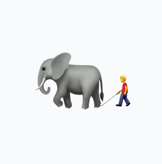

Dying by Inches
Charles Darwin once wrote in a letter that he was ““dying by inches, from not having any body to talk to about insects.”
That is exactlyhow I feel about GenAI.
It’s very out of character: I usually do everything on my own, figure stuff out on my own.
But here it was too hard. I felt just like the men in the parable of the Elephant and the Blind Men: the beast was too large for me to be able to comprehend on my own.

I’ve desperately scoured the surface of social media searching for it: Reddit, Twitter. Nothing. Chat told me to use ‘--ar 3:4’ on Bluesky (a portrait reference) — nothing. Perhaps it was all living in cozy web group chats? I found my way into one but it wasn’t exactly what I wanted.
I just wanted to have a place to compare field notes, goddamn it: it’s like we’re all in an unknown territory, and we’re all doing our solo explorations and we should come back to the campfire to compare our field notes.
And our tales should be shared in writing, in forums, so that they stay through time and we can develop “AI métis” together. (“Métis” being a Greek word for practical know-how: embodied, localized knowledge acquired through experience.)
This effort has failed. Such a forum doesn't exist yet, or I couldn't find it
I did, however, end up having a call with @anotherpattern — a long time twitter mutual that saw my desperate tweets into the void about GenAI — about his use of Midjourney and Claude.
Like me he’s using Midjourney to make a game, Claude to keep all his creative projects organized. It was striking how similarly our intentions were.
What was also striking is how differently we used the tools: I use the vary function and previous images a lot in Midjourney: he just edits the prompt and uses Claude to perfect it. He has very definitive visions of what he wants and will go through 100s of generations to get them out: I am more explorative.
He ended up giving me two insights: one is that he sees it as “walking through the dreams of the robot” and the other one is the need to “Avoid attractors” — that, for example, it was really hard to get a little monster animal that was not Pokemon, because that was so present in the training data.
And this is just what I wanted.